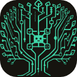

Claude, Codex, Grok, and any ACP agent in one VS Code chat, on your own subscriptions. A lead plans the work and hands each part to the right agent. Canopy checks what each one really did.

You give the work to a lead. It finds out what the change needs, makes a plan, and hands each part to the agent you picked for that kind of work.
Start a chat with Claude, Codex, or Grok in charge, and switch whenever you like. A message goes to the lead unless you @mention another agent, and it goes at once, even while others work.
Pick who does research, implementation, and review. With roles enforced, only the implementer changes code; everyone else is read-only.
The lead passes on its findings and plan, so the delegate starts on the change instead of rediscovering the codebase.
A multi-phase plan is handed over phase by phase. The next phase starts only when the last reports done and its checks pass.
When a delegate says it is done, Canopy records the files that really changed and the commands that really ran, and runs your tests itself.
Every delegate's changes are snapshotted. Undo one agent's work and keep everyone else's.
A lane is a unit of work: the same branch in every repo of your workspace that has it, with one goal, plan, and set of notes. Agents work in a lane's worktree while you run something else.
The folder you cloned, with your env files and dev server.
Set up with your env files and setup command, so agents can work on it now.
Until you warm it up. Slots are reused, so installs stay fast.
Run here moves a lane into the primary checkouts and the old one into a worktree, uncommitted work included, across every repo at once or not at all. Start a lane from a GitHub or Linear issue and Canopy names the branch and seeds its goal.
Canopy runs the agent CLIs installed on your machine, signed in the way you signed them in. It never reads, stores, or forwards your credentials, and it never calls a provider's API itself, so usage counts against your own plan with each provider.